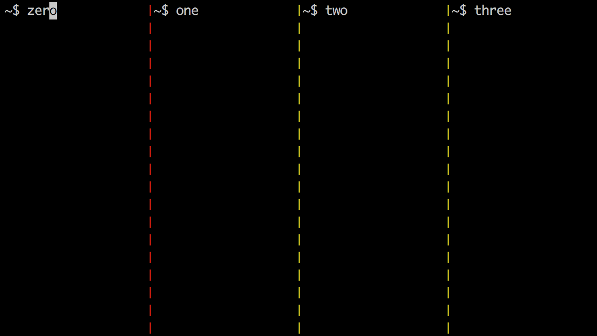
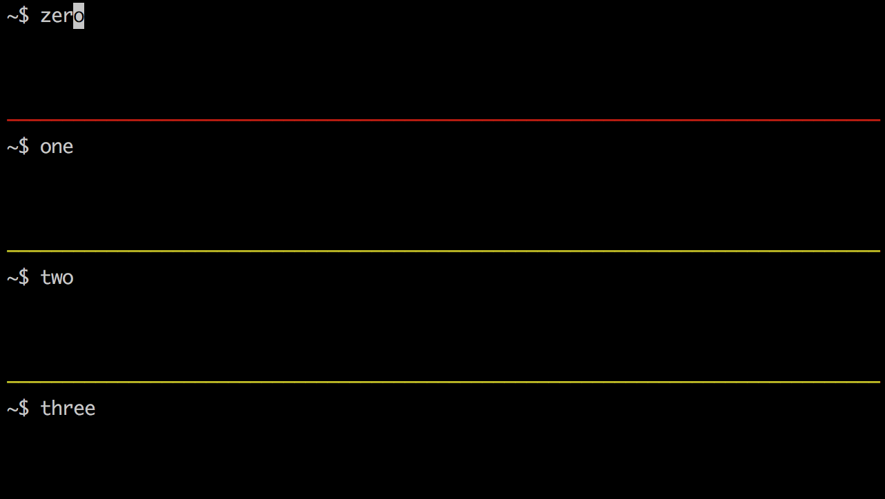
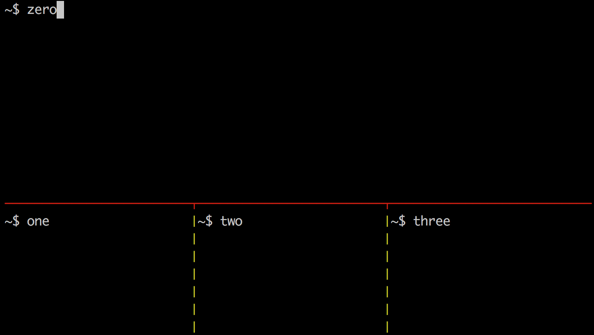
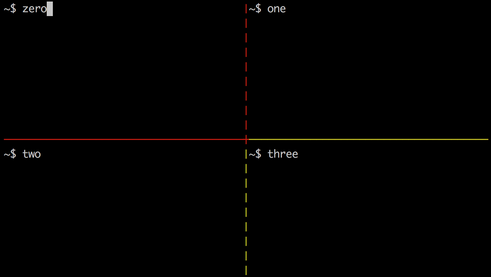

This article provides an overview of tmux. tmux is short for "terminal multiplexer." It dramatically expands what can be done with terminal windows. It is highly configurable and scriptable.
tmux is an alternative to an older, similar program named "screen". It was created by Nicholas Marriott. The first version was released in 2007.
One benefit of both tmux and screen is realized when working on remote machines where network communication can fail. Both maintain the state of sessions so the user can pick up where they left off by reconnecting and reattaching to the session.
I first learned about tmux from the excellent book "tmux: Productive Mouse-Free Development" by Brian Hogan at http://pragprog.com/book/bhtmux/tmux. If this article piques your interest in tmux, I highly recommend getting this book.
Another excellent source of information about tmux is its long man page.
Studying the tmux man page will enable you to
maximize the benefits derived from its use.
If you decide to print it, generate a nicely formatted PostScript version
with man -t tmux > tmux.ps.
This article contains many tables. It is intended to be printed and used as a cheat sheet. The tables have been carefully organized and styled so none of them split across a page break.
Like any software tool, tmux doesn't appeal to everyone. There are three key indicators that tmux is a fit for you.
| Term | Definition |
|---|---|
| server |
A tmux server manages a set of sessions. The server is started when the user creates the first session. The server terminates when all sessions have been killed. |
| client |
A tmux client manages the interactions with one session at a time. When the user enters a command from the command-line to create a new session or attach to an existing one, a client is created. The user can start any number of clients. |
| session |
A tmux session is a collection of windows. The user can ask a client to create a new window in a session, kill an existing window in a session, or switch to a different session. |
| window |
A tmux window has one or more associated panes. A client displays one window of a session at a time. By default, the name of a window is the command it is currently running, but they can be renamed. The user can ask a client to split an existing pane in order to create a new pane in a window, kill an existing pane in a window, or display a different window from the current session. |
| pane |
A tmux pane belongs to a window and
is displayed when its window is displayed. Each pane runs the default shell in a command-line terminal. The user can ask a client to change the active pane, the layout of the panes, or the position of the panes. |
| status bar |
A tmux client displays a status bar, typically on the bottom line, but it can be configured to display at the top. It has three sections named left, center, and right. The content of the left and right sections can be customized. The center section displays a list of the names of the windows in the current session. The currently opened window has an asterisk after its name. The previously opened window has a hyphen after its name. |
Typically it is desirable to view certain panes simultaneously.
This is accomplished by putting those panes in the same window.
The pane border color indicates which pane is active.
Consider creating a separate session for each group of related activities. For example, when working on multiple projects, create a session for each. Each project can have its own script that attaches to an existing session for that project if one already exists, or creates a new session. The script can create a set of windows, each with a set of panes, that are configured in a way that is convenient for that project. The script can also run commands (ex. ssh) in specific panes.
On the other hand, using a single session containing sets of unrelated windows has the advantage that all windows are always visible in the status bar of the one session. It is somewhat easier to switch between these windows, that to switch between both sessions and windows.
Sessions and windows can have names, but panes typically only have indexes.
A pane can be given a title by running this command from the pane:
printf '\e]2;title\e\\'.
Pane titles are only displayed in customized status bars
using #T.
Only the title of the active pane is displayed.
To install tmux on a Mac:
ruby -e "$(curl -fsSkL raw.github.com/mxcl/homebrew/go)"
brew install tmuxAdditional Mac-specific advice appears near the end of this article.
The steps to install tmux in a Linux environment vary
based on the package manager used.
Here are the steps when using apt-get:
sudo apt-get install libevent-devsudo apt-get install libncurses5-devtar -zxvf tmux-{version}.tar.gzcd tmux-{version}./configuremakesudo make install
To verify the version of tmux that is installed, enter tmux -V.
Note that the flag is a capital V.
There are many tmux commands.
The most useful subset and their options (in my opinion)
are covered in this article.
To see a list of all of them, enter tmux list-commands
or tmux lscm.
Many commands can be executed in several ways that include:
Every keyboard shortcut is bound to a tmux command. Some tmux commands can only be used from the command-line or a shell script. Some tmux commands can only be used from inside a tmux client. Some tmux commands can be used from anywhere.
Most keyboard shortcuts are case-sensitive and
begin with what tmux refers to as a "prefix key".
By default this is ctrl-b, also written as C-b.
The control key is abbreviated as C.
The tmux man page refers to control key sequences as C-{key}
and this article follows that convention.
The meta key is abbreviated as M.
On a Mac, this is cmd-option by default.
See the "Mac-specific Advice" section later
for steps that must be taken to enable this.
Many users bind the prefix key to C-a for convenience
and to match the prefix key in the "screen" program.
This is done in the sample tmux configuration file shown later.
Some commands briefly replace the status bar with a message.
The duration of the display is controlled by the
display-time option which defaults to 750ms.
Previously displayed messages can be viewed by running
the show-messages command whose
keyboard shortcut is prefix ~.
| Action | Command |
|---|---|
| list |
prefix ?, list-keys or lskThis lists all the current key bindings. Press the return key or "q" when finished viewing. |
| bind |
bind-key [-r] {key} {command}bind ... This binds a key to one or more commands. Multiple commands are separated by semicolons. If the key is already bound to another command, this replaces the binding. The -r flag makes the key repeat so the command can beexecuted again by pressing the key without the prefix key. |
| unbind |
unbind-key {key}unbind ...This removes a key binding. |
From a command-line or shell script, tmux commands can be executed
by entering "tmux {command}".
From inside a tmux client, tmux commands can be executed by
pressing prefix : to enter command mode
and then entering a command in the status bar.
Commands can be specified by name (full or shortest unique prefix)
or alias for commands that have one.
Tab completion can be used to enter command names.
The up and down arrows can be used to recall previously entered commands.
A common command flag is -t which specifies
a target client, session, window or pane.
After installing tmux, following along with this sample session
to get a feel for what tmux can do.
Where "prefix" appears, press C-a.
set -g prefix C-a # changes prefix key sequence from C-b to C-a
bind | split-window -h
bind - split-window -v
tmux new -s foo|-topcd /tmp; lsc, (press the comma key)vimldtmux new -s bar-vim| prefix |-: clock-mode or prefix t{C-o!dtmux lstmux attach -t foos, use arrow keys to move to "bar" and press returndtmux kill-session -t bartmux lstmux kill-session -t foo| Action | Command |
|---|---|
| new |
$ tmux new-session [-s {session-name}] [-w {first-window-name}] [{command}]$ tmux new ...This creates a new session with an optional name containing one window with an optional name and starts a new client for interacting with it. The window will contain a single pane that runs an optional command. If the session or window name is omitted, it will be an incrementing integer starting at zero. |
| detach |
prefix d, detach-client or detachThis exits from the current client. The session continues running. |
| attach |
$ tmux attach-session -t {sess-name}$ tmux attach ...This creates a new client and attaches it to an existing session. If there is only one session, the target ( -t) can be omitted.
|
| list |
list-sessions or lsWhen run from outside tmux, this outputs "failed to connect to server" if there are no sessions. |
| rename |
prefix $ (prompts)rename-session [-t {old-name}] {new-name}rename ...This renames the current session (if -t is omitted) or a specified one.
|
| switch |
from a list: prefix s or choose-session
to list existing sessionsmove to a session and press enter to switch to that session or move to a session, press right arrow or space, move to a window name, and press enter to switch to the session and make that window active previous: prefix (, switch-client -p or switchc -pnext: prefix ), switch-client -n or switchc -nThese change the session being viewed and operated on by the current client. |
| kill |
kill-session [-a] [-t {sess-name}]-a kills all sessions but the one specified with -t.Using -a without -t
kills all but the most recently created session.Run from command mode with no flags to kill the current session and client. |
| Action | Command |
|---|---|
| new |
prefix c, new-window [-n {name}] [{command}] or neww ...This creates a new window in the current session. If no name is specified, it will be the command currently running (ex. bash). |
| rename |
prefix , (prompts for new name)rename-window [-t {old-name}] {new-name} or
renamew ...This renames the current window or a specified window if -t is used.
|
| switch |
last selected: prefix l, last-window or lastnext: prefix n, next-window or nextprevious: prefix p, previous-window or prevclick window name in status bar (if enabled) by index: prefix {0..9} from list: prefix w or choose-windowfind containing text: prefix f {text} or find-window
|
| list |
list-windows or lswA window cannot be selected from the list, so this isn't very useful. Pressing prefix w, described above, is more useful.
|
| move |
prefix . (prompts for other session name)move-window -t {dst-session}movew ...This moves the current window to a different session. |
| kill |
prefix & (asks for confirmation), kill-window or killwThis kills the current window. |
| Action | Command |
|---|---|
| new |
via horizontal split: prefix % (often re-bound to prefix |), split-window -h or splitw -hvia vertical split: prefix " (often re-bound to prefix -), split-window -v or splitw -v |
| switch |
next: prefix o (doesn't repeat) or select-pane -t i:.+last active: prefix ; or last-paneby direction: prefix {arrow-key} (repeats) by index: prefix q or display-panesThis briefly displays pane indexes. Press a digit key to select a pane. Pane borders are colored to indicate which pane currently has focus. For vertical borders, the top half is colored when the left pane has focus and the bottom half is colored when the right pane has focus. |
| change layout |
See examples of the supported layouts in the next table. specific layout: prefix M {1-5}where the number matches one of the following layout names: 1) even-horizontal (left to right)2) even-vertical (top to bottom)3) main-horizontal (top fills width)4) main-vertical (left fills height)5) tiledcycle through layouts: prefix space (doesn't repeat) by layout name: select-layout {name}
|
| resize |
to full window: prefix z (toggles) "Z" is added after the window name in the status bar to indicate this. by one cell: prefix C-{arrow-key} (repeats) by five cells: prefix M-{arrow-key} (repeats) by any number of cells: resize-pane -UDLR {cells} or resizep ...These resize the current pane in the specified direction. If the mouse-resize-pane option is on, pane borders can be dragged.
|
| rotate |
down: prefix C-o (repeats) or rotate-window -DThis moves all panes to the next highest numbered position. up: prefix M-o or rotate-window -UThis moves all panes to the next lowest numbered position. |
| swap |
with previous: prefix { (doesn't repeat)with next: prefix } (doesn't repeat)with a given pane: swap-pane -s {pane-index}These swap the position of the current pane with another. |
| move |
current to new window: prefix ! or break-panecurrent pane to an existing window: join-pane -t {session-name}:{window}.{pane}
or joinp ...This adds the pane after the target pane. Omit {session-name}: for the current session (typical).If the -t value is only a number (no colon or period),it is treated as a pane index within current window. To move to last window, joinp -t!given pane to current window: join-pane -s {session-name}:{source-window}.{source-pane}omit {session-name}: for current session (typical) omit .{source-pane} if only one pane in source window This pane is added after the pane with focus. |
| execute command from a script |
$ tmux send-keys -t {sess}:{win}:{pane} '{commands}' C-m$ tmux send ...This executes commands (semicolon-separated) in a specified pane. C-m is the return key.
See the examples in the "Scripting" section later.
|
| kill (close) |
enter "exit", prefix x (asks for confirmation), kill-pane or killp |
| Layout Name | Example |
|---|---|
| even-horizontal |  |
| even-vertical |  |
| main-horizontal |  |
| main-vertical | |
| tiled |  |
Each pane has a history buffer that stores
the shell commands entered and their output.
The size of this buffer is specified by the history-limit
session option and defaults to 2000 lines.
To scroll through the content of a pane buffer and optionally copy some of its content, enter copy mode using the buffer command shown below. While in copy mode, the upper-right corner of the pane will display "[m/n]" where n is the number lines in the history and m is the current line number within that starting from zero and numbering back in time.
Each copy creates a new "paste buffer" on a stack.
There is one paste buffer stack per session.
The stack has a limited size that is specified by the
buffer-limit server option and defaults to 20.
When the limit is reached and a new paste buffer is created,
the oldest one is discarded.
| Action | Command |
|---|---|
| enter copy mode |
prefix [ or copy-mode
|
| exit copy mode |
Press return or q.
|
| move cursor in copy mode |
Press arrow keys or use Vim keys likegg (go to top), G (go to bottom),C-f (page forward), and C-b (page backward).To configure use of emacs keys, set these global options: set-option -g mode-keys emacsset-option -g status-keys emacs
|
| copy text |
Enter copy mode, move to start, press space,
move to end, and press return. This creates a new paste buffer on the stack and exits copy mode. |
| copy text in rectangular copy mode |
Perform the same steps as normal copy text, but press rv after entering copy mode.Pressing rv toggles rectangular copy mode.
|
| copy all visible text |
capture-paneThis creates a new paste buffer on the stack. |
| list paste buffers |
prefix #, list-buffers or lsbThis lists each buffer index followed by the beginning of its content. Press return or q when finished viewing.
|
| view paste buffer contents |
show-buffer [-b buffer{number}] or showb ...This shows the content of the specified buffer or the top one if the buffer name is omitted. Press return or q when finished viewing.
|
| save paste buffer content to file |
save-buffer [-b buffer{number}] {file-path} or saveb ...If the buffer name is not specified, the most recent paste buffer is saved. |
| paste text from top paste buffer |
When using Vim, enter insert mode before doing this. Press ], paste-buffer or pasteb |
| paste text from a specific buffer |
When using Vim, enter insert mode before doing this. Press prefix = or choose-bufferMove the cursor to one of the buffers and press return. Press q to exit without choosing a buffer. |
| change paste buffer stack size |
buffer-limit {number}
|
| delete one paste buffer |
delete-buffer [-b buffer{number}] or deleteb ...This deletes the specified buffer (ex. buffer0013)or the top one if the buffer name is not specified. There isn't much of a reason to do this. |
| clear history buffer |
clear-history or clearhistThis deletes all the history buffer content for the current pane. It does not delete paste buffers. |
tmux is highly configurable. There are three kinds of options: server, session, and window. Options can be global (the common case) or apply to a specific session or window.
| Action | Command |
|---|---|
| set option |
set-option [-agqsuw] [-t {sess}|{win}] {name} {value}set ...-a appends value to the existing option value.
-g specifies a global option (typically want this), not specific to one session or window.
-q operates quietly without informational message output.
-s specifies a server option.
-u unsets an option specific to a session or window so the global option is used.
-t specifies the name of a particular session or window whose option is being set or unset.-w specifies a window option.
If neither -s nor -w is used, a session option is assumed.
|
| show option |
show-options [-gsw] [-t {sess}|{win}] [{name}]show ...The flags have the same meaning as in set-option.Omit name to see all options in the specified category. |
| set window option |
set-window-option [-agqu] [-t {win}] {name} {value}setw ...This is identical to using set-option -w ...The flags have the same meaning as in set-option.
|
| show window option |
show-window-options [-g] [-t {win}] [{name}]showw ...This is identical to using show-options -w ...The flags have the same meaning as in set-option. |
There are WAY too many options to describe in detail in this article. The table below is provided simply to give a feel for the configurability of tmux. See the tmux man page for details.
| Kind | Options |
|---|---|
| server | buffer-limit, escape-time, exit-unattached, quiet, and set-clipboard |
| session | base-index, bell-action, bell-on-alert, default-{command|path|shell|terminal}, destroy-unattached, detach-on-destroy, display-panes-{active-colour|colour|time}, display-time, history-limit, lock-after-time, lock-command, lock-server, message-{attr|bg|fg|limit}, message-command-{attr|bg|fg}, mouse-resize-pane, mouse-select-{pane|window}, mouse-utf8, pane-active-border-{bg|fg}, pane-border-{bg|fg}, prefix, prefix2, repeat-time, set-remain-on-exit, set-titles, set-titles-string, status, status-{attr|bg|fg|interval|justify|keys}, status-left, status-left-{attr|bg|fg|length}, status-right, status-right-{attr|bg|fg|length}, status-utf8, terminal-overrides, update-environment, visual-{activity|bell|content|silence}, and word-separators |
| window | aggressive-resize, allow-rename, alternate-screen, automatic-rename, clock-mode-{colour|style}, force-{height|width}, main-pane-{height|width}, mode-{attr|bg|fg}, mode-{keys|mouse}, monitor-{activity|content|silence}, other-pane-{height|width}, pane-base-index, remain-on-exit, renumber-windows, synchronize-panes, utf8, window-status-bell-{attr|bg|fg}, window-status-content-{attr|bg|fg}, window-status-activity-{attr|bg|fg}, window-status-{attr|bg|fg|format}, window-status-current-{attr|bg|fg|format}, and xterm-keys |
tmux configuration comes from two files.
If it exists, tmux reads /etc/tmux.conf which is shared by all users.
Then it reads .tmux.conf in the user's home directory (~/.tmux.conf)
to supplement and override settings in the first file.
Here's an example configuration file that is well-commented to describe each piece.
This barely scratches the surface of possible status bar customizations.
All characters from a # to the end of a line are treated as a comment and ignored.
# Session options
# reduce time tmux waits to send commands after an escape is input
set -sg escape-time 1
# Window options
# allow multiple clients to display windows from the same session in different sizes
setw -g aggressive-resize-on
setw -g mode-keys vi # enable vi keys for working with buffers
# watch for activity in windows so it can be indicated in the status bar
# (see visual-activity option below)
setw -g monitor-activity on
setw -g renumber-windows on # when one is deleted
setw -g window-status-current-bg magenta # in status bar
# Prefix key
set -g prefix C-a # instead of default C-b
unbind C-b # don't want two prefix keys
bind C-a send-prefix # press C-a twice to send to an app
# Key bindings
bind r source-file ~/.tmux.conf \; display "reloaded" # reload this file
# The line above replaces the default binding to the "refresh-client" command.
bind | split-window -h # in addition to %
bind - split-window -v # in addition to "
# Mouse options
set -g mouse on # allow mouse drags to enter copy mode and select text
# Color customizations
set -g default-terminal "screen-256color" # use 256 colors instead of 16
# Colors can be specified by name or hex #rrggbb.
set -g pane-border-fg black # default is "default" which is gray
set -g pane-active-border-fg red # default is green
# Status bar
set -g status-bg blue # default is green
set -g status-fg white # default is black
set -g status-interval 60 # update status bar every 60 seconds
set -g status-justify centre # display window list in center of status bar
set -g status-left "session #S window #I pane #P -"
set -g status-left-length 40
set -g status-right "#h %a %m/%d/%y" # hostname, day abbrev., month, day, year
set -g status-right-length 45
set -g status-utf8 on # allow status bar to contain Unicode characters
set -g visual-activity on # highlight window names in status bar on activity
Changes made to a configuration file are not automatically picked up by existing tmux clients.
To load configuration changes into a running client,
use the command source-file {path} (alias source).
This is needed often when testing configuration changes,
so it is convenient to bind this to a key
as shown in the configuration file above.
With that binding in place, changes can be loaded by pressing prefix r.
Here's an example bash shell script for starting a tmux session named mytmux.
A key feature of this type of script is only creating a new session
if one with a given name doesn't already exist.
If it does exist, the script just attaches to it.
!/bin/bash
# If this file is modified, kill the existing session
# with "tmux kill-session -t mytmux" and run this again.
# If the "mytmux" session does not exist ...
if ! tmux has-session -t mytmux; then
# Create a new session named "mytmux" and detach from it.
# The name of the first window will be the command running in it (vim).
tmux new-session -s mytmux -d
# In first window, cd to Node labs directory and
# start Vim with vertical split and in explore mode.
tmux send-keys -t mytmux:0.0 'cd ~/Node.js/nodejs-labs; vim +vs +E' C-m
# Create a second window named "console" for entering shell commands.
tmux new-window -n console -t mytmux
tmux split-window -h -t mytmux:1 # split into two horizontal panes
tmux split-window -v -t mytmux:1.1 # split right pane into two vertical panes
# In upper-right pane, cd to Node labs directory and start "less-watch".
tmux send-keys -t mytmux:1.1 'cd ~/Node.js/labs; less-watch .' C-m
# In lower-right pane, run "top".
tmux send-keys -t mytmux:1.2 'top' C-m
tmux select-window -t mytmux:0 # move focus to first window
#tmux select-pane -t 0 # move focus to vim pane; only one, so not needed
fi
# Attach to the "mytmux" session.
tmux attach -t mytmux
Sometimes it is useful to attach multiple tmux clients to the same session.
This can be done on a single machine using multiple terminal windows.
It enables simultaneous viewing of multiple tmux windows
that belong to the same session.
This is especially useful on computers that have more than one monitor
or on a laptop that also has an external monitor.
After creating a session or attaching to one
in the normal way from the first terminal window,
create new sessions from other terminal windows using
tmux new -t {session-name}.
The new session is "grouped" with the target session which enables
the sessions to share the same set of tmux windows,
but display different ones.
If multiple monitors are being used and they are different sizes (the typical case when one is a laptop screen), tmux will only display the same number of cells (rows and columns) in each terminal window. Excess cells in larger terminal windows are filled with period characters. To avoid this, set the window option aggressive-resize to "on", preferably in a tmux configuration file.
Having multiple clients attached to the same session can be used for
collaborative work, including pair programming.
To do this, login to a machine where ssh is enabled
and start a tmux session.
Then ask each participant to ssh to that machine
and attach to the tmux session in the normal way,
tmux attach -t {session-name}.
Each user will see the results
of what others do in the shared session.
The Mac OS X Terminal program in Snow Leopard and earlier only supports 16 colors.
To get 256 colors, iTerm2 must be used.
This is a free Terminal replacement that can be downloaded from
http://www.iterm2.com/.
After starting iTerm2, activate the iTerm menu and select Preferences ... Profiles ... Terminal.
In the "Default" profile, set "Report Terminal Type" to "xterm-256color".
Quit iTerm2, restart it, and verify that the TERM environment variable
is set to "xterm-256color" instead of "xterm".
In addition, add the following command to ~/.tmux.conf:
set -g default-terminal "screen-256color"
To verify correct Terminal color configuration, enter these commands in a Terminal window:
wget http://www.vim.org/scripts/download_script.php?src_id=4568 -O colortest
perl colortest -w
There are some preference changes that are needed to allow certain tmux shortcut keys to be used on a Mac. In System Preferences, select Keyboard ... Shortcuts ... Mission Control and uncheck these: "Mission Control", "Application windows", "Move left a space", and "Move right a space". The keyboard shortcuts for those are the tmux defaults for resizing a pane up, down, left, or right by one cell. In iTerm2 preferences, select Profiles ... Keys and select "+Esc" for "Left option key" and "Right option key". This allows cmd-option to be used as the meta key in tmux.
Earlier it was recommended to change the prefix key to C-a.
If this is done, also consider changing the caps lock key
to function as the control key. There are two reasons for this.
The caps lock key is larger than the control key
and it is next to the "A" key.
To make this change, open System Preferences,
select Keyboard ... Keyboard tab ... Modifier Keys, and
select "^ Control" from the drop-down list next to "Caps Lock Key".
To make an iTerm2 window fullscreen, press cmd-enter. Press it again to toggle out of fullscreen mode.
tmux does not integrate with the Mac system clipboard by default.
This means cmd-c and cmd-v cannot
be used to copy and paste text from and to tmux panes.
However, there is a way to configure this functionality with other keys.
Here are the configuration steps:
brew install reattach-to-user-namespace
~/.tmux.conf:
set-option -g default-command "reattach-to-user-namespace -l $SHELL"
bind C-c run "tmux show-buffer | reattach-to-user-namespace pbcopy"
bind C-v run "reattach-to-user-namespace pbpaste | tmux load-buffer - && tmux paste-buffer"
:)
and entering source-file ~/.tmux.conf
To select text from a tmux pane, select it with the mouse
(if mouse option is set to on)
or enter copy mode (prefix [), move to start,
press space bar, move to end, and press return.
To copy the selected text to the Mac system clipboard, press prefix C-c.
To paste text from the Mac system clipboard into a tmux pane, prefix C-v.
Copying and pasting text from and to Mac applications is done in the normal way.
Follow the same steps above to select and copy text
from editors like Vim and emacs running in a tmux pane.
To paste text into editors running in a tmux pane,
cmd-v can be used.
For Vim, enter insert mode before pasting.
tmux certainly has a learning curve. However, the effort pays off in increased productivity.
Several people provided feedback on this article. I especially thank Charles Sharp and Brian Hicks who provided the most extensive reviews.
Additional feedback on this article is welcome. Please email it to mark@ociweb.com.